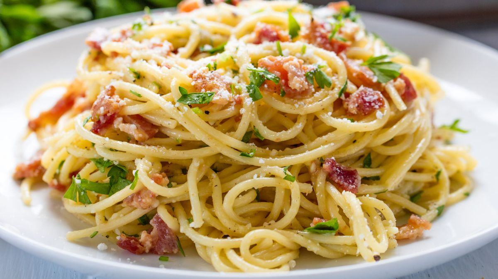

Carbonara Recipe

Description
This is a yummy Italian Pasta dish made with fresh eggs and a healthy amount of Parmesan. This recipe is a sure fire crowd pleaser.
Ingredients
- Eggs
- Capellini
- Nutmeg
- Parmesan
- Black Pepper
- Pancetta
- Parsley
Steps
- For the first step you need to get some water boiling. While the water is boiling, dice the pancetta into small cubes and put into hot frying pan
- While the Pancetta is frying and the water is coming to a boil, combine Parmesan, Black Pepper, Nutmeg, and Eggs together in medium bowl. Whisk eggs until all ingredients are combined
- When water is boiling add Pasta, set timer for needed time to cook pasta. Once pancetta is finished cooking, add crispy pancetta to egg parmesan mixture
- When pasta is finished cooking, remove from heat and strain pasta. Quickly add pasta back to cooking pot and pour Egg Parmesan mixture over hot pasta. Stir mixture into pasta until all is well coated.
- Serve with chopped parsely and more parmesan
- Bon Appetit